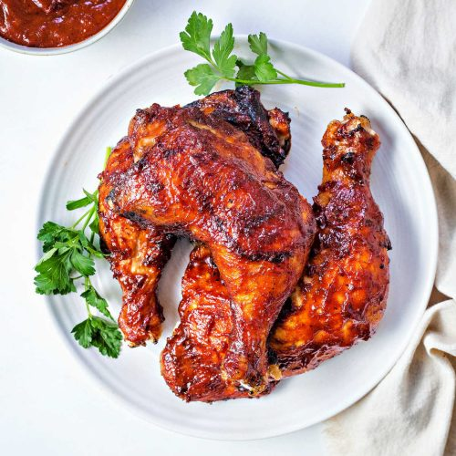

Oven Baked BBQ Chicken
OVEN BAKED BBQ CHICKEN

Ingredients
- 8 pieces skin on, bone in chicken thighs/drumsticks (~3 lbs)
- 3 tsp Kosher Salt
- 1.5 tsp Light Brown Sugar
- 1.5 tsp Cumin
- 1 tsp Black Pepper
- 1 tsp Paprika
- 1 tsp Garlic Powder
- 2 Medium Yellow Onions
- 2 tbsp Olive Oil
- 1 tbsp Apple Cider Vinegar
- 1 cup BBQ Sauce (my favorite go-to is Sweet Baby Ray's)
Instructions
- Preheat oven to 350 deg F
- Pat dry chicken with paper towel then transfer to bowl.
- Combine salt, brown sugar, cumin, pepper, paprika, and garlic
powder in small bowl
- Coat entire chicken pieces with spice rub
- Peel and halve onions. Thinly slice length wise.
- Cover baking sheet with foil and transfer onion to baking sheet.
Drizzle with oil and season with salt and pepper.
- Place chcken skin side up on top of onions
- Roast on top rack for 40-45 min. Blister for 2-4 minute under broiler
- Remove from oven and let rest for 5 minutes.
- While chicken is resting, combine apple cider vinegar and BBQ sauce.
- Flip chicken upside down and paint with BBQ sauce mixture.
- Broil for 2-4 minutes (until blistered)
- Flip chicken again, paint skin side with BBQ mixture and broil for 2-4 minutes.
- Remove from oven and let rest for 5 minutes before serving